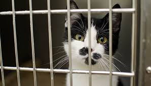
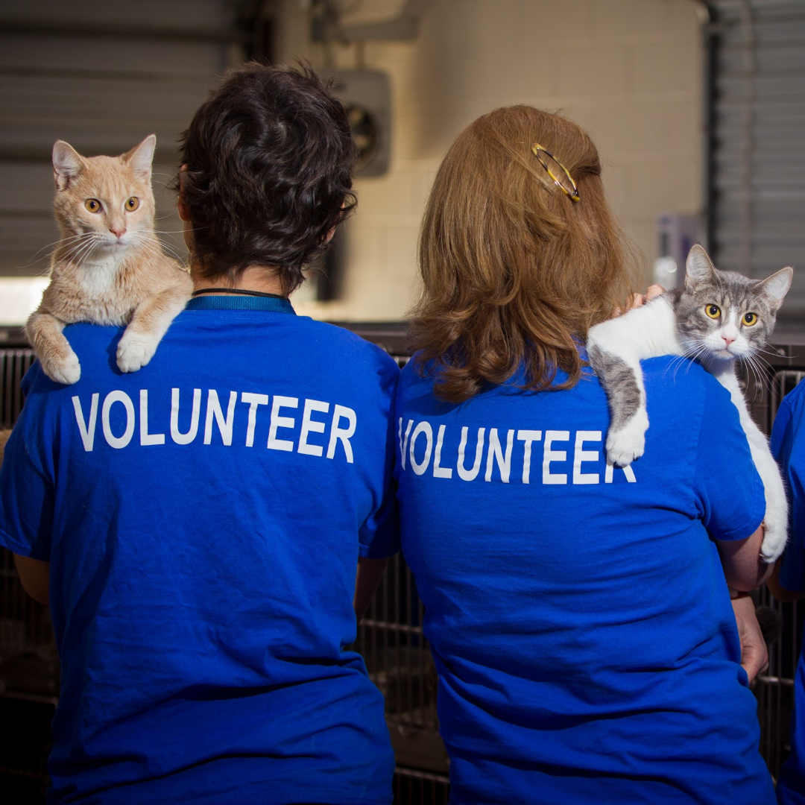
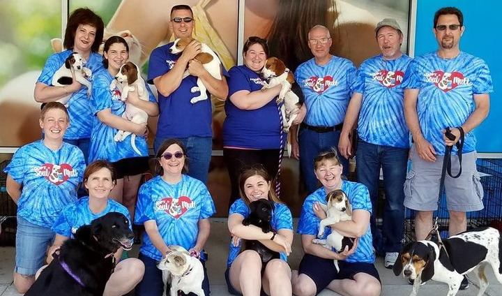
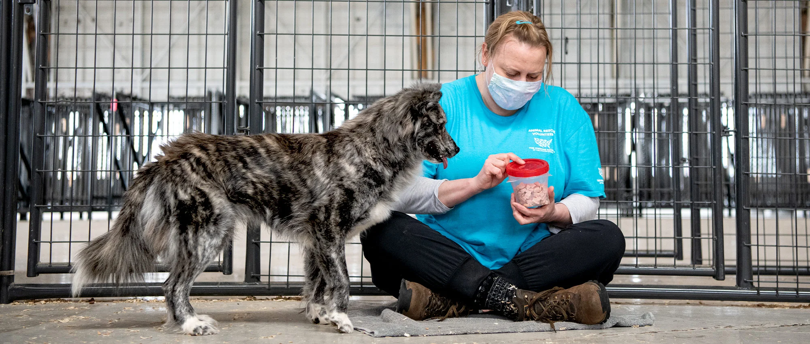
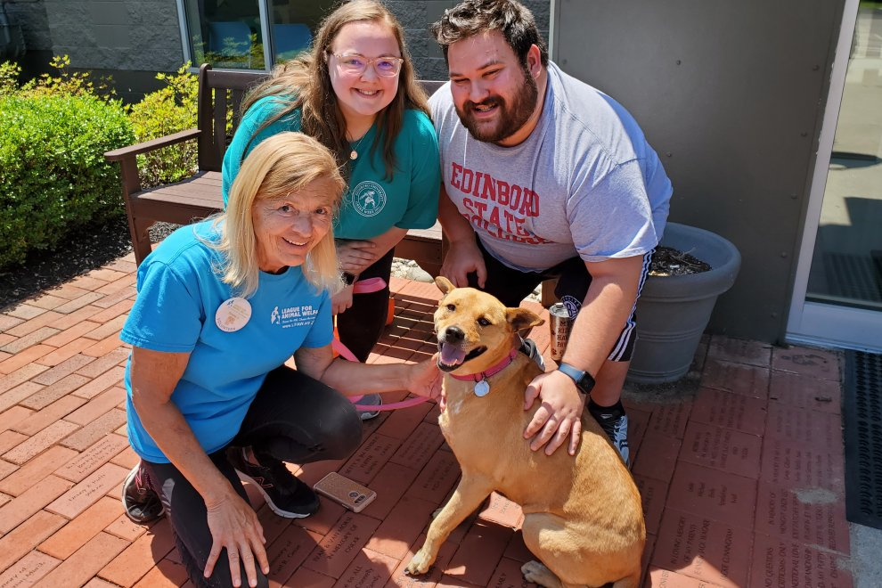

The Shelter's Mission
Team Information
Our team is made up of dedicated volunteers and professionals who ensure every animal gets the care they deserve. Each team member brings a unique skill set to the shelter. From veterinary care to adoption counseling, our team works tirelessly to improve the lives of animals.
We operate with compassion and commitment, making a difference in the lives of pets and their future families. Our mission is to create lasting connections between animals and people, bringing joy and love into countless homes.
Meet our dedicated staff and volunteers who bring passion and love to Paws and Whiskers. Every day, they go above and beyond to ensure the safety and happiness of the animals in our care.
Get to Know Us
Founded in 2000, Paws and Whiskers Shelter began as a small, community-driven effort to rescue stray and abandoned animals. Over the years, the shelter has grown into a fully operational facility known for its dedication to animal welfare and advocacy. What started as a dream to help a few has become a beacon of hope for many.
We’ve helped rehome over 5,000 animals in the last decade, giving countless pets a second chance at life. From organizing adoption events to partnering with local businesses, our journey has been one of community collaboration and relentless perseverance.
Every story adds to the legacy of Paws and Whiskers, and every milestone reminds us why we began this journey in the first place.